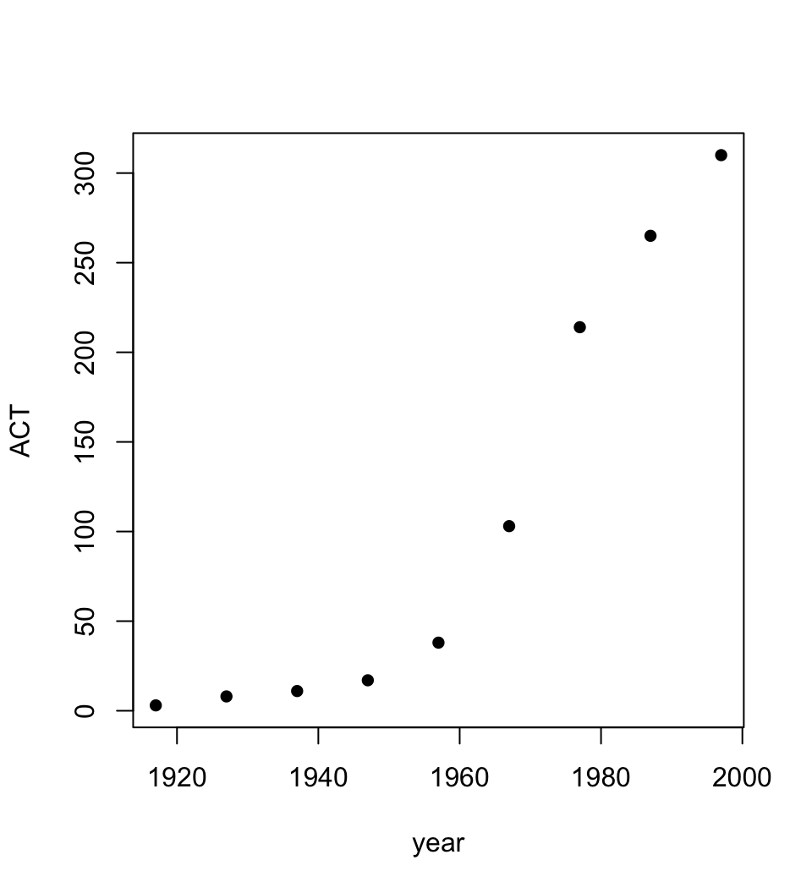
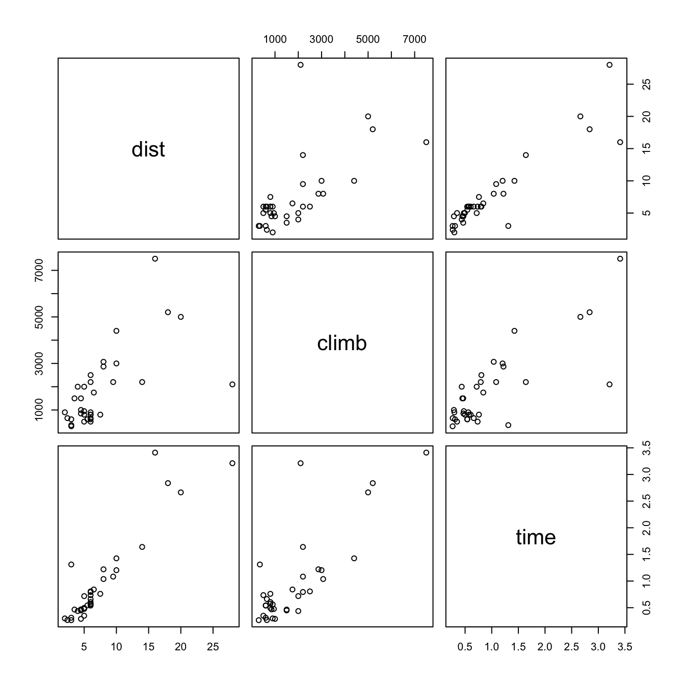
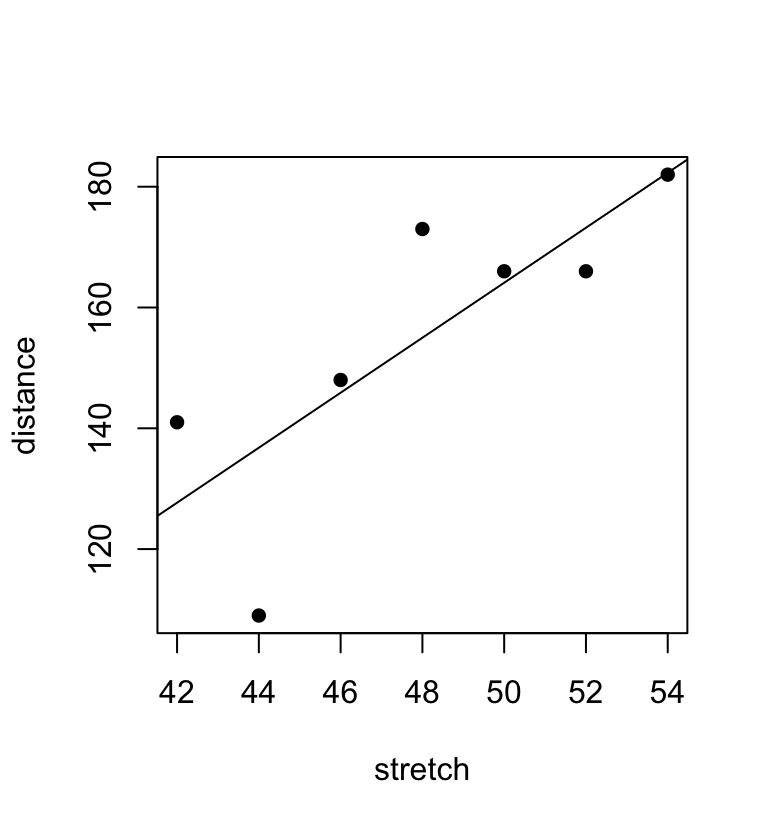
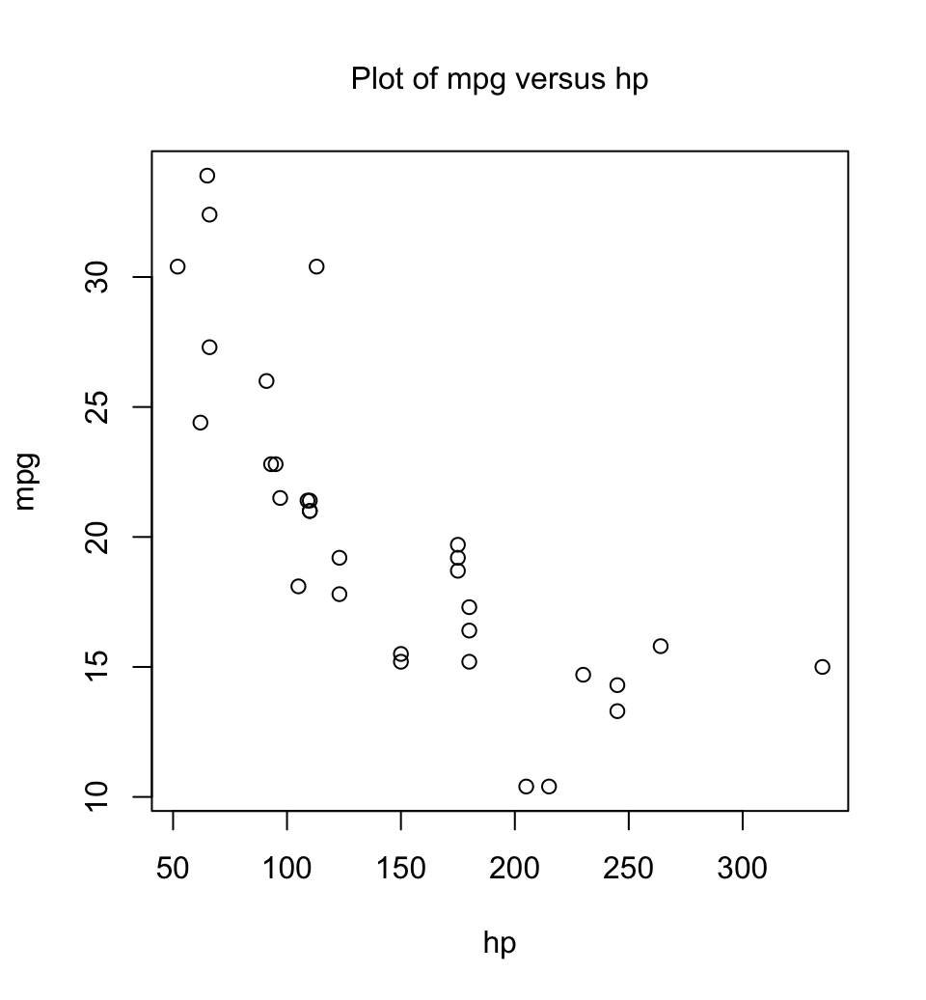

2+2
[1] 41 An overview of the R system
1.1 Learn by typing at the command line
This document mostly assumes that users will type commands into the command window, at the command line prompt. The command line prompt, i.e. the >, is an invitation to start typing in commands. For example, type 2+2 and press the Enter key. Here is what appears on the screen:
Here the result is 4. The [1] says, a little strangely, “first requested element will follow”. Here, there is just one element. The > indicates that R is ready for another command.
For later reference, note that the exit or quit command is
q()An alternative to the use of q() is to click on the File menu and then on Exit. There will be a message asking whether to save the workspace image. Clicking Yes (the safe option) will save all the objects that remain in the workspace — any that remain from the start of the session and any that have been added since. RStudio users can click on one of the options that are available under the Session menu header.
The workspace is the name given to a database (as it is called) that holds objects (datasets and functions) that have been created or copied in by the user, and have not been subsequently deleted. Depending on session settings, these may add to objects that were saved from a previous session and re-loaded at startup.
Some notational details
As noted earlier, the command line prompt is
>R commands (expressions) are typed following this prompt.
There is also a continuation prompt, used when, following a carriage return, the command is still not complete. By default, the continuation prompt is
+In these notes, we often continue commands over more than one line, but omit the + that will appear on the commands window if the command is typed in as we show it.
For the names of R objects or commands, case is significant. Thus Austpop is different from austpop. For file names when using Windows, however, the Microsoft Windows conventions apply, and case does not distinguish file names. On Unix and Mac systems, letters that have a different case are treated as different.
Anything that follows # on the command line is taken as comment.
Note: Recall that, in order to quit from the R session we could type q(). This is because q is a function. Typing q on its own, without the parentheses, displays the text of the function on the screen. Try it!
Base, recommended, and other packages
## Base packages
names(which(installed.packages()[ ,"Priority"] == "base", ))
[1] "base" "compiler" "datasets" "graphics" "grDevices" "grid"
[7] "methods" "parallel" "splines" "stats" "stats4" "tcltk"
[13] "tools" "utils"
## Recommended packages
names(which(available.packages(repos =
c(CRAN = "https://cran.r-project.org"))[ ,"Priority"] == "recommended", ))
[1] "boot" "class" "cluster" "codetools" "foreign"
[6] "KernSmooth" "lattice" "MASS" "Matrix" "mgcv"
[11] "nlme" "nnet" "rpart" "spatial" "survival" Packages that do not come with the initial distribution must be downloaded and installed separately. A number of packages are by default attached at startup. Names of packages (additional to base) that are by default attached at startup can be checked thus:
getOption('defaultPackages')
[1] "datasets" "utils" "grDevices" "graphics" "stats" "methods" To see which packages have been attached at any point in a session, type:
search()These may, if earlier session was saved upon quitting and restored on startup for the current session, include packages that were attached in the earlier session.
It pays to have a separate working directory for each major project. RStudio makes it straightforward, both to set up a new project in a new directory, and to move between projects.
Some ways to use R
R may be used as a calculator.
R evaluates and prints out the result of any expression that one types in at the command line in the console window. Expressions are typed following the prompt (>) on the screen. The result, if any, appears on subsequent lines.
2+2
[1] 4
sqrt(10) # Type ?sqrt to see help for `sqrt`
[1] 3.162278
2*3*4*5
[1] 120
1000*(1+0.045)^5 - 1000 # Interest on $1000, compounded annually
[1] 246.1819
# at 4.5% p.a. for five years
pi # R knows about pi
[1] 3.141593
2*pi*6378 #Circumference of Earth at Equator, in km; radius is 6378 km
[1] 40074.16
deg <- c(30,60,90)
# Save the numeric vector `c(30,60,90)` with the name `deg`
sin(deg*pi/180) # Convert angles to radians, then take sin()
[1] 0.5000000 0.8660254 1.0000000
sin(c(30,60,90)*pi/180) # The result is the same
[1] 0.5000000 0.8660254 1.0000000Observe that c() is a function that joins vectors together
R makes it easy to create plots and other forms of data summary
As a relatively simple example, where all columns are numeric, consider the data frame austpop that holds population figures (in thousands) for Australian states and territories, and total population, at various times since 1917. Assuming that the DAAG package has been installed, this can be accessed as DAAG::austpop. The data are:
austpop <- DAAG::austpop
head(austpop)
year NSW Vic Qld SA WA Tas NT ACT Aust
1 1917 1904 1409 683 440 306 193 5 3 4941
2 1927 2402 1727 873 565 392 211 4 8 6182
3 1937 2693 1853 993 589 457 233 6 11 6836
4 1947 2985 2055 1106 646 502 257 11 17 7579
5 1957 3625 2656 1413 873 688 326 21 38 9640
6 1967 4295 3274 1700 1110 879 375 62 103 11799Figure 1.1 uses the function plot() to show a plot of the Australian Capital Territory (ACT) population between 1917 and 1997.
Figure 1.1 uses the function plot() to show a plot of the Australian Capital Territory (ACT) population between 1917 and 1997.

Code is:
plot(ACT ~ year, data=austpop, pch=16) The option pch=16 sets the plotting character to a solid black dot. This plot can be improved greatly. We can specify more informative axis labels, change size of the text and of the plotting symbol, and so on.
R provides a huge range of abilities for working with data
Between the base, recommended, and huge range of contributed packages, R offers wide-ranging abilities for data manipulation, for data summary, for graphical display, for fitting models, for simulation, and for a variety of other computations.
Data frames are a standard way to store data. A dataframe is a list of columns, all of the same length. Columns can be numeric, or character, or logical (values are TRUE or FALSE), or factor, or dates. As a first example, consider the data frame hills. This has three columns (variables), with the names distance, climb, and time. Typing summary(hills) gives summary information on these variables. There is one column for each variable, thus:
hills <- DAAG::hills # Copy the dataframe `hills`, from the
# DAAG package, into the workspace.
summary(hills)
dist climb time
Min. : 2.000 Min. : 300 Min. :0.2658
1st Qu.: 4.500 1st Qu.: 725 1st Qu.:0.4667
Median : 6.000 Median :1000 Median :0.6625
Mean : 7.526 Mean :1815 Mean :0.9646
3rd Qu.: 8.000 3rd Qu.:2200 3rd Qu.:1.1438
Max. :28.000 Max. :7500 Max. :3.4103 We may for example require information on ranges of variables. Thus the range of distances (first column) is from 2 miles to 28 miles, while the range of times (third column) is from 15.95 (minutes) to 204.6 minutes.
A helpful graphical summary for the hills data frame is the scatterplot matrix, shown in Figure 1.2.
pairs(DAAG::hills)

To reproduce the plot, type
pairs(DAAG::hills)Correlation calculations are a form of data summary. The correlation matrix for the hills data is:
options(digits=3)
cor(DAAG::hills)
dist climb time
dist 1.000 0.652 0.920
climb 0.652 1.000 0.805
time 0.920 0.805 1.000There is a case for taking logarithms of data values, and then calculating correlations. This can all be done in one step, thus:
cor(log(DAAG::hills))
dist climb time
dist 1.00 0.700 0.890
climb 0.70 1.000 0.724
time 0.89 0.724 1.000R was not clever enough to relabel distance as log(distance), climb as log(climb), and time as log(time). Notice that the correlations between time and distance, and between time and climb, have reduced. Why has this happened?
In the straight line regression calculations now demonstrated, the variable names are the names of columns in the data frame DAAG::elasticband. The formula that is supplied to the lm() (linear model) command asks for the regression of distance traveled by the elastic band (distance) on the amount by which it is stretched (stretch).
elasticband <- DAAG::elasticband
elastic.lm <- lm(distance~stretch,data=elasticband)
lm(distance ~stretch, data=elasticband)
Call:
lm(formula = distance ~ stretch, data = elasticband)
Coefficients:
(Intercept) stretch
-63.57 4.55 More complete information is available by typing
summary(elastic.lm)Figure 1.3 plots the data and adds the regression line:

distance versus stretch, with regression line added
## Code
plot(distance ~ stretch,data=elasticband, pch=16)
abline(elastic.lm) # Add regression line to graphR is an interactive programming language
We calculate the Fahrenheit temperatures that correspond to Celsius temperatures 25, 26, …, 30:
celsius <- 25:30
fahrenheit <- 9/5*celsius+32
conversion <- data.frame(Celsius=celsius, Fahrenheit=fahrenheit)
print(conversion)
Celsius Fahrenheit
1 25 77.0
2 26 78.8
3 27 80.6
4 28 82.4
5 29 84.2
6 30 86.0Extensive help is available from the command line
To get a help on an R object, use help() or ?, thus
Thus, to get help on the R function plot(), type:
?plotThe two search functions help.search() and apropos() can help in finding what one wants. Examples of their use are:
help.search("matrix")
## This lists all functions whose help pages have a title or alias in
## which the text string “matrix” appears.
apropos("matrix")
## This lists all function names that include the text “matrix”The function help.start() opens a browser window that gives access to the full range of documentation for syntax, packages and functions.
Experimentation often helps clarify the precise action of an R function.
1.2 Vectors
Examples of vectors are
c(2,3,5,2,7,1)
3:10 # The numbers 3, 4, .., 10
c(TRUE,FALSE,FALSE,FALSE,TRUE,TRUE,FALSE)
c(”Canberra”,”Sydney”,”Newcastle”,”Darwin”)Vectors may have mode logical, numeric or character . The first two vectors above are numeric, the third is logical (i.e. a vector with elements of mode logical), and the fourth is a string vector (i.e. a vector with elements of mode character). The missing value symbol, which is NA, can be included as an element of a vector.
Joining (concatenating) vectors
The c in c(2, 3, 5, 7, 1) above is an acronym for “concatenate”, i.e. the meaning is: “Join these numbers together in to a vector. Existing vectors may be included among the elements that are to be concatenated. In the following we form vectors x and y, which we then concatenate to form a vector z:
x <- c(2,3,5,2,7,1)
x
[1] 2 3 5 2 7 1
y <- c(10,15,12)
y
[1] 10 15 12
z <- c(x, y)
z
[1] 2 3 5 2 7 1 10 15 12The concatenate function c() may also be used to join lists.
Subsets of Vectors
There are two common ways to extract subsets of vectors.
1. Specify the numbers of the elements that are to be extracted, e.g.
x <- c(3,11,8,15,12) # Assign to x the values 3, 11, 8, 15, 12
x[c(2,4)] # Extract elements (rows) 2 and 4
[1] 11 15One can use negative numbers to omit elements:
x <- c(3,11,8,15,12)
x[-c(2,3)]
[1] 3 15 12- Specify a vector of logical values. The elements that are extracted are those for which the logical value is T. Thus suppose we want to extract values of x that are greater than 10.
x>10 # This generates a vector of logical (T or F)
[1] FALSE TRUE FALSE TRUE TRUE
x[x>10]
[1] 11 15 12Arithmetic relations that may be used in the extraction of subsets of vectors are <, <=, >, >=, ==, and !=. The first four compare magnitudes, == tests for equality, and != tests for inequality.
Vectors can have named elements, in which case elements can be extracted by name. For example:
height <- c(Andreas=178, John=185, Jeff=183)
height[c("John","Jeff")]
John Jeff
185 183 Patterned Data
Use 5:15 to generate the numbers 5, 6, . . ., 15. Entering 15:5 will generate the sequence in the reverse order. To repeat the sequence (2, 3, 5) four times over, enter rep(c(2,3,5), 4) thus:
rep(c(2,3,5),4)
[1] 2 3 5 2 3 5 2 3 5 2 3 5If instead one wants four 2s, then four 3s, then four 5s, enter
rep(c(2,3,5),c(4,4,4)) # An alternative is rep(c(2,3,5), each=4)
[1] 2 2 2 2 3 3 3 3 5 5 5 5Note further that, in place of c(4,4,4) we could write rep(4,3).
In addition to the above, note that the function rep() has an argument length.out, meaning “keep on repeating the sequence until the length is length.out.”
1.3 Lists, with dataframes as an important special case
Lists collect together, under a single name, what can be an arbitrary set of R objects. These might be vectors of several different modes and lengths, scalars, dates, matrices or more general arrays, or functions, etc.
Dataframes are lists!
A data frame is a list of variables, all of equal length. Variables can be vectors (integer, or numeric, or character, or logical, or complex). Among other possibilities, they can also be factors, or date objects. For the moment, attention will be limited to dataframes where the columns are integer, or numeric, or character, or logical.
Just as with any other list, subscripting extracts a list. Thus Cars93.summary[4] is a data frame with a single column, which is the fourth column vector of Cars93.summary. Use Cars93.summary[[4]] or Cars93.summary[,4] to extract the column vector.
R packages include a wide variety of datasets, mostly in the form of dataframes. Data frames have a central role in the way that R is set up to process data, fit models, and display graphs.
Operations with dataframes
Among the datasets in the DAAG package is Cars93.summary, created from information in the Cars93 data set in the Venables and Ripley MASS package. Here it is:
Cars93.summary <- DAAG::Cars93.summary
Cars93.summary
Min.passengers Max.passengers No.of.cars abbrev
Compact 4 6 16 C
Large 6 6 11 L
Midsize 4 6 22 M
Small 4 5 21 Sm
Sporty 2 4 14 Sp
Van 7 8 9 VNotice that the final column has the mode character. Different columns can have different modes – including numeric, character, and logical (values TRUE and FALSE).
The data frame has row labels (access with row.names(Cars93.summary)) Compact, Large, . . . The column names (access with names(Cars93.summary)) are Min.passengers (i.e. the minimum number of passengers for cars in this category), Max.passengers, No.of.cars., and abbrev. The first three columns have mode numeric, and the fourth has mode character. Columns can be vectors of any mode. The column abbrev could equally well be stored as a factor – more on that in due course.
Accessing parts of data frames
A data frame that has only the first four rows and omits the third column can be extracted thus:
cars <- Cars93.summary[1:4, c(1,2,4)]
cars <- Cars93.summary[1:4, -3] # Alternative --- specify what to omitAny of the following will pick out the fourth column of the data frame Cars93.summary, then storing it in the vector type.
type <- Cars93.summary$abbrev
type <- Cars93.summary[,4]
type <- Cars93.summary[,"abbrev"]
type <- Cars93.summary[[4]] # Take the object that is stored
# in the fourth list element.*Merging Data Frames – a simple example {.unnumbered}
The data frame MASS::Cars93 holds extensive information on data from 93 cars on sale in the USA in 1993. The data frame DAAG::Cars93.summary has as row names the distinct values of the factor Type. The final column, with the name abbrev, holds two character abbreviations of each of the car type names, suitable for use in plotting.
Cars93.summary <- DAAG::Cars93.summary
Cars93.summary
Min.passengers Max.passengers No.of.cars abbrev
Compact 4 6 16 C
Large 6 6 11 L
Midsize 4 6 22 M
Small 4 5 21 Sm
Sporty 2 4 14 Sp
Van 7 8 9 VWe proceed thus to add a column that has the abbreviations to the data frame.
Cars93 <- MASS::Cars93
new.Cars93 <- merge(x=Cars93, y=Cars93.summary[,4,drop=F],
by.x="Type", by.y="row.names") Notice that the row names of Cars93.summary are treated as a column of the data frame, with name row.names. The effect is to create a data frame that has the abbreviations in the additional column with name abbrev. If there had been rows with missing values of Type, these would have been omitted from the new data frame. This can be avoided by ensuring that Type has NA as one of its levels, in both data frames.
Lists more generally
Output from fitting a model is a list
As an illustration consider the list object that R creates as output from an lm() linear model fit.
elastic.lm <- lm(distance~stretch, data=DAAG::elasticband)The object elastic.lm is a list that brings together several different kinds of objects. The names are:
names(elastic.lm)
[1] "coefficients" "residuals" "effects" "rank"
[5] "fitted.values" "assign" "qr" "df.residual"
[9] "xlevels" "call" "terms" "model" The first list element is:
elastic.lm$coefficients
(Intercept) stretch
-63.57 4.55 Alternative ways to extract this first list element are:
elastic.lm[["coefficients"]]
elastic.lm[[1]]We can alternatively ask for the sublist whose only element is the vector elastic.lm$coefficients. For this, specify
elastic.lm["coefficients"]
$coefficients
(Intercept) stretch
-63.57 4.55
# elastic.lm[1] gives the same resultNotice that the information is in this case preceded by $coefficients, meaning “list element with name coefficients”. The result is a list, now with just the first element of elastic.lm.
The second list element is a vector of length 7:
print(elastic.lm$residuals, digits=3)
1 2 3 4 5 6 7
2.107 -0.321 18.000 1.893 -27.786 13.321 -7.214 The tenth list element documents the function call:
elastic.lm$call
lm(formula = distance ~ stretch, data = DAAG::elasticband)
mode(elastic.lm$call)
[1] "call"1.4 Factors, dates, NAs, and more
Factors and ordered factors
A factor is stored internally as a numeric vector with values 1, 2, 3, k, where k is the number of levels. An attributes table gives the ‘level’ for each integer value . Factors provide a compact way to store character strings. They are crucial in the representation of categorical effects in model and graphics formulae. The class attribute of a factor has, not surprisingly, the value "factor".
Consider a survey that has data on 691 females and 692 males. If the first 691 are females and the next 692 males, we can create a vector of strings that that holds the values thus:
gender <- c(rep("female",691), rep("male",692))(The usage is that rep(“female”, 691) creates 691 copies of the character string “female”, and similarly for the creation of 692 copies of “male”.)
We can change the vector to a factor, by entering:
gender <- factor(gender)Internally the factor gender is stored as 691 1’s, followed by 692 2’s. It has stored with it the vector:
levels(gender)
[1] "female" "male" In most cases where the context seems to demand a character string, the 1 is translated into "female" and the 2 into "male". The values "female" and "male" are the levels of the factor. By default, the levels are in alphanumeric order, so that "female" precedes "male". Hence:
levels(gender) # Assumes gender is a factor, created as above
[1] "female" "male" The order of the levels in a factor determines the order in which the levels appear in graphs that use this information, and in tables. To cause "male" to come before "female", use
gender <- relevel(gender, ref="male")An alternative is
gender <- factor(gender, levels=c("male", "female"))This last syntax is available both when the factor is first created, or later when one wishes to change the order of levels in an existing factor. Incorrect spelling of the level names will generate an error message. Try
gender <- factor(c(rep(“female”,691), rep(“male”,692)))
table(gender)
gender <- factor(gender, levels=c(“male”, “female”))
table(gender)
gender <- factor(gender, levels=c(“Male”, “female”))
# Erroneous - "male" rows now hold missing values
table(gender)
rm(gender) # Remove gender The following adds site names to the possum dataframe:
possum <- DAAG::possum
possumsites <- DAAG::possumsites
possum$sitenam <- rownames(possumsites)[DAAG::possum$site]
with(possum, table(sitenam))
sitenam
Allyn River Bellbird Bulburin Byrangery Cambarville Conondale
7 13 18 13 33 13
Whian Whian
7
sitefac <- factor(possum$sitenam)
table(sitefac)
sitefac
Allyn River Bellbird Bulburin Byrangery Cambarville Conondale
7 13 18 13 33 13
Whian Whian
7 It is the integer values that are stored. Along with the vector of integer values are stored a list of attributes, which holds the level names and the class vector:
mode(sitefac)
[1] "numeric"
# The attributes list is for an object of this class
attributes(sitefac)
$levels
[1] "Allyn River" "Bellbird" "Bulburin" "Byrangery" "Cambarville"
[6] "Conondale" "Whian Whian"
$class
[1] "factor"
# This controls the interpretation of `sitefac` a factorPrinting the contents of the column with the name sitefac gives the names, not the integer values. As in most operations with factors, R does the translation invisibly. There are though annoying exceptions that can make the use of factors tricky. To get back the site names as a character vector and tabulate the result, specify
table(as.character(possum$sitefac))
< table of extent 0 >To get the integer values and tabulate the result, specify
table(unclass(possum$sitefac))
< table of extent 0 >We might prefer the names to appear in order of latitude, from North to South. We can change the order of the level names to reflect this desired order:
ordnam <- rownames(possumsites)[order(possumsites$Latitude)]
possum$sitefac <- factor(possum$sitenam, levels=ordnam)
with(possum, table(sitefac))
sitefac
Bellbird Cambarville Allyn River Whian Whian Byrangery Conondale
13 33 7 7 13 13
Bulburin
18 Factors have the potential to cause surprises. Points to note are:
* When a vector of character strings becomes a column of a data frame, R by default turns it into a factor. Enclose the vector of character strings in the wrapper function I() if it is to remain character. With tibbles, this is not an issue. * There are some contexts in which factors become numeric vectors. To be sure of getting the vector of text strings, specify e.g. as.character(possum$sitefac).
Ordered Factors
Actually, it is their levels that are ordered. To create an ordered factor, or to turn a factor into an ordered factor, use the function ordered(). The levels of an ordered factor are assumed to specify positions on an ordinal scale. Try
stress.level <- rep(c("low","medium","high"),2)
ordf.stress <- ordered(stress.level,
levels=c("low","medium","high"))
ordf.stress
[1] low medium high low medium high
Levels: low < medium < high
ordf.stress < "medium"
[1] TRUE FALSE FALSE TRUE FALSE FALSE
ordf.stress >= "medium"
[1] FALSE TRUE TRUE FALSE TRUE TRUE
ordf.stress == "medium"
[1] FALSE TRUE FALSE FALSE TRUE FALSEOrdered factors inherit the attributes of factors, and have a further ordering attribute. Asking for the class of an object returns details both of the class of the object, and of any classes from which it inherits.
Thus:
class(ordf.stress)
[1] "ordered" "factor"
attributes(ordf.stress)
$levels
[1] "low" "medium" "high"
$class
[1] "ordered" "factor" Inclusion of character string vectors in data frames
When data are input using read.table(), or when the data.frame() function is used to create data frames, vectors of character strings are by default turned into factors. The parameter setting stringsAsFactors=TRUE, available both with read.table() and with data.frame(), will if needed ensure that character strings are input without such conversion. For read.table(), an alternative is as.is=TRUE. When input uses functions in the readr package, character strings are left unchanged.
Dates
See ?Dates, ?as.Date and ?format.Date for information on functions in base R for working with dates. Use as.Date() to convert text strings into dates. The default is that the year comes first, then the month, and then the day of the month, thus:
# Electricity Billing Dates
dd <- as.Date(c("2003/08/24","2003/11/23","2004/02/22","2004/05/23"))
diff(dd)
Time differences in days
[1] 91 91 91Use format() to set or change the way that a date is formatted. The following are a selection of the symbols used:
%d: day, as number
%a: abbreviated weekday name (%A: unabbreviated)
%m: month (00-12)
%b: month abbreviated name (%B: unabbreviated)
%y: final two digits of year (%Y: all four digits)
The default format is %Y-%m-%d. The function as.Date() takea vector of character strings that has an appropriate format, and converts it into a dates object. By default, dates are stored using January 1 1970 as origin. This becomes apparent whenas.integer()` is used to convert a date into an integer value. Examples are:
as.Date("1/1/1960", format="%d/%m/%Y")
[1] "1960-01-01"
as.Date("1:12:1960",format="%d:%m:%Y")
[1] "1960-12-01"
as.Date("1960-12-1")-as.Date("1960-1-1")
Time difference of 335 days
as.Date("31/12/1960","%d/%m/%Y")
[1] "1960-12-31"
as.integer(as.Date("1/1/1970","%d/%m/%Y"))
[1] 0
as.integer(as.Date("1/1/2000","%d/%m/%Y"))
[1] 10957The function format() allows control of the formatting of dates when they are printed. See ?format.Date.
dec1 <- as.Date("2004-12-1")
format(dec1, format="%b %d %Y")
[1] "Dec 01 2004"
format(dec1, format="%a %b %d %Y")
[1] "Wed Dec 01 2004"As with factors, the underlying storage mode is a numeric vector.
mode(dd)
[1] "numeric"
julian(dd)
[1] 12288 12379 12470 12561
attr(,"origin")
[1] "1970-01-01"
# Makes it clear that date is days since '1970-01-01'
julian(as.Date('1970-01-01'))
[1] 0
attr(,"origin")
[1] "1970-01-01"NAs (missing Values), NaN (not a number) and Inf
In R, the missing value symbol is NA. Any arithmetic operation or relation that involves NA generates an NA. This applies also to the relations <, <=, >, >=, ==, !=. The first four compare magnitudes, == tests for equality, and != tests for inequality. Users who do not carefully consider implications for expressions that include NAs may be puzzled by the results. Specifically, note that x==NA generates NA.
Be sure to use is.na(x) to test which values of x are NA. As x==NA gives a vector of NAs, this gives no information about x.
For example
x <- c(1,6,2,NA)
is.na(x) # TRUE for when NA appears, and otherwise FALSE
[1] FALSE FALSE FALSE TRUE
x == NA # Result is NA, for all elements of `x`
[1] NA NA NA NA
NA == NA
[1] NAThe Use of NA in variable subscripts
Any arithmetic operation or relation that involves NA generates an NA. Set
y <- c(1, NA, 3, 0, NA)Be warned that y[y==NA] <- 0 leaves y unchanged. The reason is that all elements of y==NA evaluate to NA. This does not select an element of y, and there is no assignment. To replace all NAs by 0, use
y[is.na(y)] <- 0The following, where the subscript vector on both sides has one or more missing values, generates an error message:
x <- c(1,6,2,NA)
y <- 11:15
y[x>2] <- x[x>2]
Error in y[x > 2] <- x[x > 2]: NAs are not allowed in subscripted assignmentsUse !is.na(x) to limit the selection, on both sides, to those elements of x that are not NAs.
Inf and NaN
The following are allowed:
c(-1/0, 1/0, 0/0, 1/Inf)
[1] -Inf Inf NaN 0It is up to the user to ensure that allowing such calculations to proceed leads to results that make sense.
1.5 Matrices and arrays
All elements of a matrix have the same mode, i.e. all numeric, or all character. Thus a matrix is a more restricted structure than a data frame. One reason for numeric matrices is that they allow a variety of mathematical operations that are not available for data frames. Matrices are likely to be important for those users who wish to implement new regression and multivariate methods. The matrix construct generalizes to array, which may have more than two dimensions. Matrices are stored columnwise, in a single vector. Thus consider:
xx <- matrix(1:6,ncol=3) # Equivalently, enter matrix(1:6,nrow=2)
xx
[,1] [,2] [,3]
[1,] 1 3 5
[2,] 2 4 6If xx is any matrix, the assignment
x <- as.vector(xx)places columns of xx, in order, into one long vector x. In the example just given, we get back the elements 1, 2, . . . , 6. Matrices have the attribute “dimension”. Thus
dim(xx)
[1] 2 3Thus, a matrix is a vector (numeric or character or logical) whose dimension attribute has length 2.
Now set
x34 <- matrix(1:12,ncol=6)
x34
[,1] [,2] [,3] [,4] [,5] [,6]
[1,] 1 3 5 7 9 11
[2,] 2 4 6 8 10 12Examples of the extraction of columns or rows or submatrices are:
x34 <- matrix(1:12, nrow=3)
x34[2:3, c(1,4)] # Extract rows 2 & 3 & columns 1 & 4
x34[2,] # Extract the second row
x34[-2,] # Extract all rows except the second
x34[-2,-3] # Omit row 2 & column 3The dimnames() function assigns and/or extracts matrix row and column names. The is a list, in which the first list element is the vector of row names, and the second list element is the vector of column names. This generalizes in the obvious way for use with arrays, which we now discuss.
Arrays
The generalization from a matrix (2 dimensions) to allow more than 2 dimensions gives an array. A matrix is a 2-dimensional array. Consider a numeric vector of length 24. So that we can easily keep track of the elements, we will make them 1, 2, .., 24. Thus
x <- 1:24
dim(x) <- c(2,12)
# `x` is then a 2 x 12 matrix.
x
[,1] [,2] [,3] [,4] [,5] [,6] [,7] [,8] [,9] [,10] [,11] [,12]
[1,] 1 3 5 7 9 11 13 15 17 19 21 23
[2,] 2 4 6 8 10 12 14 16 18 20 22 24Now try
dim(x) <-c(3,4,2)
x
, , 1
[,1] [,2] [,3] [,4]
[1,] 1 4 7 10
[2,] 2 5 8 11
[3,] 3 6 9 12
, , 2
[,1] [,2] [,3] [,4]
[1,] 13 16 19 22
[2,] 14 17 20 23
[3,] 15 18 21 24Conversion of numeric dataframes into matrices
There are various manipulations that are available for matrices, but not for data frames. Use as.matrix() to handle any conversion that may be necessary. Or, as with apply(), the conversion may happen automatically.
1.6 Data entry and editing
Entry of Data at the Command Line
The following data gives, for each amount by which an elastic band is stretched over the end of a ruler, the distance that the band moved when released:
stretch 46 54 48 50 44 42 52
distance 148 182 173 166 109 141 166 The function data.frame() can be used to input these (or other) data directly at the command line. We will give the data frame the name elasticband:
elasticband <- data.frame(stretch=c(46,54,48,50,44,42,52),
distance=c(148,182,173,166,109,141,166))Entry and/or editing of data in an editor window
To edit the data frame elasticband in a spreadsheet-like format, type
elasticband <- edit(elasticband)Options for read.table()
Under RStudio, input of data from files is very conveniently handled by selecting \(\underline{File}\) | \(\underline{Import \space Dataset}\) from the menu. Functions in the tidyverse collection greatly extend the range of data structure types that can be readily input into R. For this purpose, it is convenient to work from the RStudio menu, where the default is to read data into the data frame variant that has the name tibble.
The base R function read.table() takes, optionally various parameters additional to the file name that holds the data. Specify header=TRUE if there is an initial row of header names. The default is header=FALSE. In addition users can specify the separator character or characters. Command alternatives to the default use of a space are sep="," and sep="\\t". This last choice makes tabs separators. Similarly, users can control over the choice of missing value character or characters, which by default is NA. If the missing value character is a period (“.”), specify na.strings=".".
There are several variants of read.table() that differ only in having different default parameter settings. Note in particular read.csv(), which has settings that are suitable for comma delimited (csv) files that have been generated from Excel spreadsheets.
If read.table() detects that lines in the input file have different numbers of fields, data input will fail, with an error message that draws attention to the discrepancy. It is then often useful to use the function count.fields() to report the number of fields that were identified on each separate line of the file.
1.7 R objects, the workspace, and attached packages
To attach the MASS package, type:
library("MASS")
Attaching package: 'MASS'
The following object is masked _by_ '.GlobalEnv':
hillsIt will then be attached at position 2 on the ‘search list’, which is the list of databases (as they are termed) that R searches for datasets or functions whose source has not been specifically identified. Position 1 is reserved for workspace objects that have been created or copied in by the user.
Functions and datasets are specific types of R objects. Notice that the first name on the search list is .GlobalEnv, which refers to the workspace. The following code ‘loads’ the dataframe cabbages, from the MASS package, into the workspace:
cabbages <- MASS::cabbagesIf the MASS package has earlier been attached, there will then be two places on the search list where it can be found. The name cabbages, appearing on its own, would be taken to refer to the version in the workspace, not to that in the attached package MASS.
The function with()
The function with() attaches the data frame (or, it can be a list) that is given as its first argument, within a specially created environment for the duration of the calculation(s) that are specified by its second argument. The environment here is neither the workspace nor an attached database. See ?environment for details of what, in general, constitutes an environment.
For example:
av <- with(trees, mean(Height))
# The assignment places the result in the worksapce.The environment is then the first place searched, looking for a column with the name Height.
with(list(x=1:3, y=5:8), mean(y))
[1] 6.5Saving the workspace
All R entities, including functions and data structures, exist as objects. They can all be operated on as data. Type in ls() to see the names of all objects in your workspace. An alternative to ls() is objects(). In both cases there is provision to specify a particular pattern, e.g. starting with the letter p.
Typing the name of an object causes the printing of its contents. Try typing q, mean, etc. In a long session, it makes sense to save the contents of the working directory from time to time. It is also possible to save individual objects, or collections of objects into a named image file. Some possibilities are:
save.image() # Save contents of workspace, into the file .RData
save.image(file="archive.RData") # Save into the file archive.RData
save(celsius, fahrenheit, file="tempscales.RData")Important: On quitting, R offers the option of saving the workspace image, by default in the file .RData in the working directory. This allows the retention, for use in the next session in the same workspace, any objects that were created in the current session. Careful housekeeping may be needed to distinguish between objects that are to be kept and objects that will not be used again. Before typing q() to quit, use rm() to remove objects that are no longer required. Saving the workspace image will then save everything remains. The workspace image will be automatically loaded upon starting another session in that directory.
The function save() can be used to save a specific set of R objects into a named image file.
Functions and datasets – one at a time, or per database?
The dataset possum from the DAAG can be accessed as DAAG::possum, provided DAAG is installed on the computer. This has the advantage of leaving no room for ambiguity over the source of the dataset.
Datasets can alternatively be made available, using the functions attach() or load(), on a per database basis. For this purpose, a database is an R package, or an image file that holds some or all of the datasets that have been saved from an R session. Or it can be a list or data frame, allowing the list elements or data frame columns to be referred to directly, without reference to the list or data frame. The following first saves the dataframes DAAG::possum and DAAG::cuckoos to the image file misc.RData in the working directory (enter getwd() to check where that is), and then attaches misc.RData, making both these datasets available from a database that is placed at position 2 on the search list:
possum <- DAAG::possum; cuckoos <- DAAG::cuckoos
save(possum, cuckoos, file="misc.Rdata")
rm(possum, cuckoos) # Remove from the workspace
# Use `attach()` to make these available again.
attach("misc.RData")Be aware that if an object of the same name happens to be present in the workspace, that will be taken instead. The function load() can alternatively be used to load the objects saved in misc.RData into the workspace, which might be a safer way to proceed.
Individual dataframes can also be attached or loaded.
possum <- DAAG::possum # Load `possum` into the workspace
attach(DAAG::possum) # Add DAAG::possum to the search list
# Its columns can then be directly referenced by name Databases that are attached in the course of a session are by default added at position 2 on the search list. Set the argument pos to a value greater than 2 in order to add at a later position.
Image files, from the working directory or (with the path specified) from another directory, can be attached, thus making objects in the file available on request. For example
attach("tempscales.RData")
ls(pos=2) # Check the contents of the file that has been attachedThe parameter pos gives the position on the search list.
Datasets in R packages
Type in data() to get a list of data sets (mostly data frames) associated with all packages that are in the current search path. To get information on the data sets that are included in the datasets package, specify
data(package="datasets")and similarly for any other package. In most packages, data from an attached package are automatically available. Use of e.g., data(airquality) to attach the data set airquality (datasets package) is unnecessary. The out-of-the-box Windows and other binary distributions include a number of commonly required packages, including datasets. Other packages must be explicitly installed.
The base package, and several other packages (including datasets), are automatically attached at the beginning of the session. To attach any other installed package, use the library() command.
1.8 Functions in R
We give two simple examples of R functions.
An Approximate Miles to Kilometers Conversion
miles.to.km <- function(miles)miles*8/5The return value is the value of the final (and in this instance only) expression that appears in the function body . Use the function thus
miles.to.km(175) # Approximate distance from Canberra to Sydney, in miles
[1] 280The function will do the conversion for several distances all at once. To convert a vector of the three distances 100, 200 and 300 miles to distances in kilometers, specify:
miles.to.km(c(100,200,300))
[1] 160 320 480A function that returns the mean and standard deviation of a set of numbers
mean.and.sd <- function(x=1:10){
av <- mean(x)
sd <- sqrt(var(x))
c(mean=av, SD=sd)
}Notice that a default argument is supplied. Now invoke the function:
mean.and.sd() # Uses default argument
mean SD
5.50 3.03
mean.and.sd(hills$climb)
mean SD
1815 1619 Looping – the for() function
A simple example of a for loop is
for (i in 1:10) print(i)Here is another example:
# Celsius to Fahrenheit
for (celsius in 25:30)
print(c(celsius, 9/5*celsius + 32))
[1] 25 77
[1] 26.0 78.8
[1] 27.0 80.6
[1] 28.0 82.4
[1] 29.0 84.2
[1] 30 86A better way to formulate the calculation is:
celsius <- 25:30
print(9/5*celsius+32)
[1] 77.0 78.8 80.6 82.4 84.2 86.0Skilled R users have limited recourse to loops. There are often, as in this and earlier examples, better alternatives.
Function syntax and semantics
A function is created using an assignment. On the right hand side, the parameters appear within round brackets. A default can, optionally, be provided. In the example above the default was x = 1:10, so that users can run the function without specifying a parameter, just to see what it does. Following the closing “)” the function body appears. Except where the function body consists of just one statement, this is enclosed between curly braces ({ }). The return value usually appears on the final line of the function body. In the example above, this was the vector consisting of the two named elements mean and sd.
An example of a user function
The data set mtcars in the datasets package has data on 63 cars, as given in the 1974 Motor Trend US magazine.
with(mtcars, plot(hp, mpg))
## Alternatively:
with(mtcars, plot(mpg ~ hp)) # mpg ~ hp is a graphics formulaHere is a function that makes it possible to plot the figures for any pair of columns of mtcars:
plot.mtcars <- function(form=mpg~hp, data=mtcars){
plot(form, data=data)
vars <- all.vars(form) # Extract the variable names
mtext(side=3, line=1.5,
paste("Plot of", vars[1], "versus", vars[2]))
}Observe that the function body is enclosed in braces ({ }). Figure 1.4 shows the graph produced by plot.mtcars(). Parameter settings were left at their defaults.
plot.mtcars()

mtcars data frame
Common Useful Functions
print() # Prints a single R object
cat() # Prints multiple objects, one after the other
length() # Number of elements in a vector or of a list
mean()
median()
range()
unique() # Gives the vector of distinct values
diff() # Replace a vector by the vector of first differences
# N. B. diff(x) has one less element than x
sort() # Sort elements into order, but omitting NAs
order() # x[order(x)] orders elements of x, with NAs last
cumsum()
cumprod()
rev() # reverse the order of vector elementsThe functions mean(), median(), range(), and a number of other functions, allow the argument na.rm=T; i.e. remove NAs, then proceed with the calculation. By default, sort() omits any NAs. The function order() places NAs last. Hence:
x <- c(1, 20, 2, NA, 22)
order(x)
[1] 1 3 2 5 4
x[order(x)]
[1] 1 2 20 22 NA
sort(x)
[1] 1 2 20 22String Functions
substring(<vector of text strings>, <first position>, <last position>)
nchar(<vector of text strings>)
## Returns vector of number of characters in each element.The functions sapply(), lapply(), apply(), and tapply()
The functions are called as follows:
lapply(<list>, <function>)
## N. B. A dataframe is a list. Output is a list.
sapply(<list>, <function>)
## As lapply(), but simplify (e.g. to a vector
## or matrix), if possible.
apply(<array>, <dimension>, <function>)Both sapply() (‘s’=‘simplify’) and lapply() (‘l’=‘list’) can be used with lists or with vectors, as well as with dataframes.
The function lapply() works in the same way as sapply(), but generates a list, and does not attempt to bring the list elements together into a common structure.
to the rows or columns of a matrix, can also be used with matrices. It can also be used with arrays of more than two dimensions.
The functions sapply() and lapply() take as arguments data frame, and the function that is to be applied. The following applies the function is.factor() to all columns of the supplied data frame rainforest.
sapply(DAAG::rainforest, is.factor)
dbh wood bark root rootsk branch species
FALSE FALSE FALSE FALSE FALSE FALSE TRUE
sapply(DAAG::rainforest[,-7], range) # The final column (7) is a factor
dbh wood bark root rootsk branch
[1,] 4 NA NA NA NA NA
[2,] 56 NA NA NA NA NAOne can specify na.rm=TRUE as a third argument to sapply().
This argument is then automatically passed to the function that is specified in the second argument position. For example:
sapply(DAAG::rainforest[,-7], range, na.rm=TRUE)
dbh wood bark root rootsk branch
[1,] 4 3 8 2 0.3 4
[2,] 56 1530 105 135 24.0 120The following code returns that number of missing values in each column of the data frame airquality.
sapply(airquality, function(x)sum(is.na(x)))
Ozone Solar.R Wind Temp Month Day
37 7 0 0 0 0 The function apply() can be used on data frames as well as matrices and arrays. An example that calculates means for each column is:
apply(airquality,2,mean) # All elements must be numeric!
Ozone Solar.R Wind Temp Month Day
NA NA 9.96 77.88 6.99 15.80
apply(airquality,2,mean,na.rm=TRUE)
Ozone Solar.R Wind Temp Month Day
42.13 185.93 9.96 77.88 6.99 15.80 The use of apply(airquality,1,mean) will give means for each row.
These are not, for these data, useful information!
*An example that uses sapply() with a vector of text strings {.unnumbered}
We will work with the column Make in the dataset MASS::Cars93. To find the position at which the first space appears in the information on make of car, we might do the following:
Cars93 <- MASS::Cars93
car.brandnames <- sapply(strsplit(as.character(Cars93$Make), " ", fixed=TRUE),
function(x)x[1])
car.brandnames[1:5]
[1] "Acura" "Acura" "Audi" "Audi" "BMW" Using aggregate() and tapply()
The arguments are in each case a variable, a list of factors, and a function that operates on a vector to return a single value. For each combination of factor levels, the function is applied to corresponding values of the variable.
The function aggregate() returns a data frame. For example:
cabbages <- MASS::cabbages
str(cabbages)
'data.frame': 60 obs. of 4 variables:
$ Cult : Factor w/ 2 levels "c39","c52": 1 1 1 1 1 1 1 1 1 1 ...
$ Date : Factor w/ 3 levels "d16","d20","d21": 1 1 1 1 1 1 1 1 1 1 ...
$ HeadWt: num 2.5 2.2 3.1 4.3 2.5 4.3 3.8 4.3 1.7 3.1 ...
$ VitC : int 51 55 45 42 53 50 50 52 56 49 ...
with(cabbages, aggregate(HeadWt, by=list(Cult=Cult, Date=Date), FUN=mean))
Cult Date x
1 c39 d16 3.18
2 c52 d16 2.26
3 c39 d20 2.80
4 c52 d20 3.11
5 c39 d21 2.74
6 c52 d21 1.47The syntax for tapply() is similar, except that the name of the second argument is INDEX rather than by. The output is an array with as many dimensions as there are factors. Where there are no data values for a particular combination of factor levels, NA is returned.
Functions for Confidence Intervals and Tests
Two of the simpler functions are t-test (allows both a one-sample and a two-sample test) and chisq.test() for testing for no association between rows and columns in a two way table. (This assumes counts enter independently into the cells of the table. The test is invalid if there is clustering in the data.)
Use the help pages to get more complete information.
Matching and Ordering
match(<vec1>, <vec2>) ## For each element of <vec1>, returns the
## position of the first occurrence in <vec2>
order(<vector>) ## Returns the vector of subscripts giving
## the order in which elements must be taken
## so that <vector> will be sorted.
rank(<vector>) ## Returns the ranks of the successive elements.Numeric vectors will be sorted in numerical order. Character vectors will be sorted in alphanumeric order. The operator %in% can be used to pick out subsets of data. For example:
x <- rep(1:5,rep(3,5))
x
[1] 1 1 1 2 2 2 3 3 3 4 4 4 5 5 5
two4 <- x %in% c(2,4)
two4
[1] FALSE FALSE FALSE TRUE TRUE TRUE FALSE FALSE FALSE TRUE TRUE TRUE
[13] FALSE FALSE FALSE
# Now pick out the 2s and the 4s
x[two4]
[1] 2 2 2 4 4 4Compare Working Directory Data Sets with a Reference Set
At the beginning of a new session, we might store the names of the objects in the working directory in the vector dsetnames, thus:
dsetnames <- objects()Now suppose that we have a function additions(), defined thus:
additions <- function(objnames = dsetnames)
{
newnames <- objects(pos=1)
existing <- as.logical(match(newnames, objnames, nomatch = 0))
newnames[!existing]
}At some later point in the session, we can enter
additions(dsetnames)to get the names of objects that have been added since the start of the session.
A Simulation Example
We would like to know how well such a student might do by random guessing, on a multiple choice test consisting of 15 questions each with five alternatives. If the choice is truly random, with the same probability for all 5 possibilities, we can simulate the correctness of the student for each question by using sample(1:5, size=1), taking 1 as ‘correct’ and any other number as ‘wrong’. For 15 questions we can do sample(1:5, replace=T, size=15), and repeat this perhaps 1000 times to get an idea of the distribution of number of right answers. Or we can calculate the distribution as dbinom(x, size=15, prob=0.2), with x running from 0 to 15.
resp1000 <- matrix(sample(1:5, replace=T, size=15000),nrow=1000)
# Each row counts as one set of responses
correct <- apply(resp1000, 1, function(x)sum(x==1))
## Look at distribution of number of correct answers.
table(correct)/1000
correct
0 1 2 3 4 5 6 7 8 9
0.034 0.143 0.256 0.238 0.187 0.098 0.029 0.010 0.004 0.001
## Now use `dbinom()` to obtain expected numbers
setNames(round(dbinom(0:15, size=15, prob=0.2), 3), 0:15)[1:11]
0 1 2 3 4 5 6 7 8 9 10
0.035 0.132 0.231 0.250 0.188 0.103 0.043 0.014 0.003 0.001 0.000
# For x>0, the probability is no more than 0.0005
round(pbinom(8, size=15, prob=0.2, lower.tail=F),4) ## 9 or more
[1] 8e-04Poisson Random Numbers
One can think of the Poisson distribution as the distribution of the total for occurrences of rare events. For example, an accident at an intersection on any one day should be a rare event. The total number of accidents over the course of a year may well follow a distribution that is close to Poisson. However, the total number of people injured is unlikely to follow a Poisson distribution. Why?
The function using rpois() generates Poisson random numbers. Suppose for example that traffic accidents occur at an intersection with a Poisson distribution that has a mean rate of 3.7 per year. To simulate the annual number of accidents for a 10-year period, we can specify rpois(10,3.7). We pursue the Poisson distribution in an exercise below.
Functions that assist with data management
Where data, labeling etc must be pulled together from a number of sources, and especially where you may want to retrace your steps some months later, take the same care over structuring data as over structuring code. Thus if there is a factorial structure to the data files, choose file names that reflect it. You can then generate the file names automatically, using paste() to glue the separate portions of the name together.
Lists are a useful mechanism for grouping together all data and labeling information that one may wish to bring together in a single set of computations. Use as the name of the list a unique and meaningful identification code. Consider whether you should include objects as list items, or whether identification by name is preferable. Bear in mind, also, the use of switch(), with the identification code used to determine what switch() should pick out, to pull out specific information and data that is required for a particular run. Concentrate in one function the task of pulling together data and labeling information, perhaps with some subsequent manipulation, from a number of separate files. This structures the code, and makes the function a source of documentation for the data.
Issues for the Writing and Use of Functions
There can be many functions. Choose their names and argument names carefully, so that they are meaningful, even if this means that they are longer than one would like.
There are mechanisms by which names and argument names can be abbreviated in actual use. As far as possible, make code self-documenting. Use meaningful names for R objects. Ensure that the names used reflect the hierarchies of files, data structures and code.
R allows the use of names for elements of vectors and lists, and for rows and columns of arrays and dataframes. Consider the use of names rather than numbers when you pull out individual elements, columns etc. Thus dead.tot[,“dead”] is more meaningful and safer than dead.tot[,2]. Settings that may need to change in later use of the function should appear as default settings for parameters. Use lists, where this seems appropriate, to group together parameters that belong together conceptually.
Where appropriate, provide a demonstration mode for functions. Such a mode will print out summary information on the data and/or on the results of manipulations prior to analysis, with appropriate labeling. The code needed to implement this feature has the side-effect of showing by example what the function does, and may be useful for debugging.
Break functions up into a small number of sub-functions or “primitives”. Re-use existing functions wherever possible. Write any new “primitives” so that they can be re-used. This helps ensure that functions contain well-tested and well-understood components. Watch the r-help electronic mail list (section 13.3) for useful functions for routine tasks.
Wherever possible, give parameters sensible defaults. Often a good strategy is to use as defaults parameters that will serve for a demonstration run of the function.
NULL is a useful default where the parameter mostly is not required, but where the parameter if it appears may be any one of several types of data structure. The test if(!is.null()) then determines whether one needs to investigate that parameter further.
Structure computations so that it is easy to retrace them. For this reason substantial chunks of code should be incorporated into functions sooner rather than later.
Structure code to avoid multiple entry of information.
1.9 Making Tables
The function table() makes a table of counts. Specify one vector of values (often a factor) for each table margin that is required. For example:
library(lattice) # The data frame `barley` is included in lattice
table(barley$year, barley$site)
Grand Rapids Duluth University Farm Morris Crookston Waseca
1932 10 10 10 10 10 10
1931 10 10 10 10 10 10WARNING: NAs are by default ignored. The action needed to get NAs tabulated under a separate NA category depends, annoyingly, on whether or not the vector is a factor. If the vector is not a factor, specify exclude=NULL. If the vector is a factor then it is necessary to generate a new factor that includes NA as a level. Specify x <- factor(x,exclude=NULL).
x <- c(1,5,NA,8)
x <- factor(x)
x
[1] 1 5 <NA> 8
Levels: 1 5 8
factor(x,exclude=NULL)
[1] 1 5 <NA> 8
Levels: 1 5 8 <NA>Numbers of NAs in subgroups of the data
The following gives information on the number of NAs in subgroups of the data:
rainforest <- DAAG::rainforest
table(rainforest$species, !is.na(rainforest$branch))
FALSE TRUE
Acacia mabellae 6 10
C. fraseri 0 12
Acmena smithii 15 11
B. myrtifolia 1 10Thus for Acacia mabellae the variable branch (i.e. number of branches over 2cm in diameter) has 6 NAs, out of a total of 16 data values.
1.10 Pipes – A “do this, then do that” syntax
The following calculates the difference between the largest and the smallest tree height, in the trees dataframe (datasets package):
# Use the relation: y/x = exp(log(y/x) = exp(log(y)-log(x))
diff(range(trees$Height))
[1] 24Using a pipe, this can be written:
trees$Height |> # Pipe vector of heights to function `range()`
range() |> # Pipe (min, max) vector to function `diff()`
diff()
[1] 24The data object (here, in both cases, a vector) is taken as the first argument of the function to which it is piped. Notice the ability to add commentary, at each step, that describes the operation that is to be performed.
To assign result, use either of the following:
d <- trees$Height |> range() |> diff()
trees$Height |> range() |> diff() -> d
# Uses right assignment operatorThe assignment is the last operation performed. It is then in the spirit of the use of pipes to use the right assignment operator (->) to position the assignment last.
The following creates a new data frame where the columns hold the logarithms of the values of Girth, Height, and Volume, and changes the column names accordingly:
logtrees <- setNames(log(trees), c("logGirth","logHeight","logVolume"))There are three steps here – taking the logarithms, and changing the names. What is happening may be clearer if the pipe syntax is used to set them out in order:
trees |> log() |>
setNames(c("logGirth","logHeight","logVolume")) -> logtreesNotice the specifying of the new names as a second argument, following the argument that is piped through from the previous line, to the function setnames().
Pipe to several functions, or to a later argument than the first
The trick is to create an anonymous function for which the argument concerned is the only argument:
LakeHuron |>
(function(x)c(mean = mean(x), SD = sd(x), n=length(x)))() |>
print(digits=3)
mean SD n
579.00 1.32 98.00 Wrapping round brackets around the function definition causes it to be treated as a function name.
Note that function(x) can be abbreviated to \(x).
1.11 Methods
R is an object-oriented language. Objects may have a class. Functions that have generic implementations include print(), summary(), and plot() the class of the object supplied as argument determines what action will be taken. Thus in response to print(x), R determines the class attribute of x, if one exists. If for example the class attribute is "factor" then the function which finally handles the printing is print.factor(). The function print.default() is used to print objects that have not been assigned a class.
More generally, the class attribute of an object may be a character vector. If there are ancestor classes – parent, grandparent, . . ., these are specified in order in subsequent elements of the class vector. For example, ordered factors have the class "ordered“, which inherits from the class "factor". Thus:
fac<-ordered(1:3)
class(fac)
[1] "ordered" "factor" 1.12 Some Further Programming Niceties
Extracting Arguments to Functions
When an argument appears inside a function, it is taken to be another name for the object to which the argument refers. Other possibilities are that one might want the name itself, or the character vector that has the name. Thus, consider:
fun1 <- function(x)x
fun2 <- function(x)substitute(x)
fun3 <- function(x)deparse(substitute(x))Now see what happens, in the three cases, when the argument is the linear model object created thus:
cars.lm <- lm(dist ~ speed, data=cars)
fun1(cars.lm)
Call:
lm(formula = dist ~ speed, data = cars)
Coefficients:
(Intercept) speed
-17.58 3.93
fun2(cars.lm)
cars.lm
fun3(cars.lm)
[1] "cars.lm"Parsing and Evaluation of Expressions
When R encounters an expression such as mean(x+y) or cbind(x,y), there are two steps:
* The text string is parsed and turned into an expression, i.e. the syntax is checked and it is turned into code that the R computing engine can more immediately evaluate. * The expression is evaluated.
Upon typing in
expression(mean(x+y))
expression(mean(x + y))the output is the unevaluated expression expression(mean(x+y)). Setting
my.exp <- expression(mean(x+y))stores this unevaluated expression in my.exp. The actual contents of my.exp are a little different from what is printed out. R gives as much information as it thinks helpful.
Note that expression(mean(x+y)) is different from expression(“mean(x+y)”), as is obvious when the expression is evaluated.
Here is an example:
x <- 101:110
y <- 21:30
my.exp <- expression(mean(x+y))
my.txt <- expression("mean(x+y)")
eval(my.exp)
[1] 131
eval(my.txt)
[1] "mean(x+y)"The function parse(), used with the argument text, takes code that is stored in a text string and turns it into an expression.
parse(text="mean(x+y)")
expression(mean(x + y))
expression(mean(x + y))
expression(mean(x + y))
# We store the expression in my.exp2, and then evaluate it
my.exp2 <- parse(text="mean(x+y)")
eval(my.exp2, list(x=1:5, y=13:17))
[1] 18
with(list(x=1:5, y=13:17), eval(my.exp2))
[1] 181.13 Next steps
It may pay, at this point, to glance through chapters 6 and 7, which have a more detailed coverage of the topics in this chapter. Remember also to use R’s help pages and functions. Topics from chapter 6, additional to those covered above, that may be important for relatively elementary uses of R include:
- The entry of patterned data (6.1.3)
- The handling of missing values in subscripts when vectors are assigned (7.2)
- Unexpected consequences (e.g. conversion of columns of numeric data into factors) from errors in data (6.4.1).
1.14 Exercises
- In the data frame
elasticbandfrom section 1.3.1, plotdistanceagainststretch. - The following creates a data frame that has October snow cover (millions of square kilometers)) in Eurasia for the years 1970-79:
snowCover <- data.frame(
year = 1970:1979,
snow.cover = c(6.5, 12, 14.9, 10, 10.7, 7.9, 21.9, 12.5, 14.5, 9.2))- Enter the data into R.
- Plot
snow.coverversusyear.
- Use the
hist()command to plot a histogram of the snow cover values.
- Repeat ii and iii after taking logarithms of snow cover.
- Input the following data, on damage that had occurred in space shuttle launches prior to the disastrous launch of Jan 28 1986. These are the data, for 6 launches out of 24, that were included in the pre-launch charts that were used in deciding whether to proceed with the launch. (Data for the 23 launches where information is available is in the data set
orings, from the DAAG package.)
| Temperature | Erosion | Blowby | Total |
|---|---|---|---|
| 53 | 3 | 2 | 5 |
| 57 | 1 | 0 | 1 |
| 63 | 1 | 0 | 1 |
| 70 | 1 | 0 | 1 |
| 70 | 1 | 0 | 1 |
| 75 | 0 | 2 | 1 |
Enter these data into a dataframe, with (for example) column names temperature, erosion, blowby and total. (Refer back to Section 1.6). Plot total incidents against temperature.
- For each of the following code sequences, predict the result. Then do the computation:
## a)
answer <- 0
for (j in 3:5){ answer <- j+answer }
## b)
answer<- 10
for (j in 3:5){ answer <- j+answer }
## c)
answer <- 10
for (j in 3:5){ answer <- j*answer }Look up the help for the function
prod(), and useprod()to do the calculation in 1(c) above. Alternatively, how would you expectprod()to work? Try it!Add up all the numbers from 1 to 100 in two different ways: using
for(), and usingsum(). Now apply the function to the sequence1:100. What is its action?Multiply all the numbers from 1 to 50 in two different ways: using
for()and usingprod().The volume of a sphere of radius \(r\) is \(4r^3/3\). For spheres having radii 3, 4, 5, …, 20 find the corresponding volumes and print the results out in a table. Construct a data frame with columns
radiusandvolume.Use
sapply()to apply the functionis.factor()to each column of the data frameDAAG::tinting. For each of the columns that are identified as factors, determine the levels. Which columns are ordered factors? [Useis.ordered()].Generate and save the following sets of numbers:
- Generate the numbers 101, 102, …, 112, and store the result in the vector
x.
- Generate four repeats of the sequence of numbers (4, 6, 3).
- Generate the sequence consisting of eight 4s, then seven 6s, and finally nine 3s. Store the numbers obtained , in order, in the columns of a 6 by 4 matrix.
- Create a vector consisting of one 1, then two 2’s, three 3’s, etc., and ending with nine 9’s.
- For each of the following calculations, what you would expect? Check to see if you were right!
answer <- c(2, 7, 1, 5, 12, 3, 4)
for (j in 2:length(answer)){ answer[j] <- max(answer[j],answer[j-1])}answer <- c(2, 7, 1, 5, 12, 3, 4)
for (j in 2:length(answer)){ answer[j] <- sum(answer[j],answer[j-1])}- In the data frame
airquality(datasets package):
- Determine, for each of the columns, the median, mean, upper and lower quartiles, and range;
- Extract the row or rows for which Ozone has its maximum value;
- extract the vector of values of
Windfor values ofOzonethat are above the upper quartile.
Refer to the Eurasian snow data that is given in Exercise 1.6.
Find the mean of the snow cover (a) for the odd-numbered years and (b) for the even-numbered years.Determine which columns of the data frame
MASS::Cars93are factors. For each of these factor columns, print out the levels vector. Which of these are ordered factors?Use
summary()to get information about data in the data frameattitude(in thedatasetspackage), andMASS::cpus. Comment, for each of these data sets, on what this reveals.From the data frame
MASS::mtcarsextract a data framemtcars6that holds only the information for cars with 6 cylinders.From the data frame
MASS::Cars93, extract a data frame which holds information for small and sporty cars.Use the function
sample()function to generate 100 random integers between 0 and 19. Now look up the help forrunif(), and use it for the same purpose. [Count a value between 0 and 0.05 as 0, where the range is from 0 to 1.]Write a function that will take as its arguments a list of response variables, a list of factors, a data frame, and a function such as mean or median. It will return a data frame in which each value for each combination of factor levels is summarized in a single statistic, for example the mean or the median.
Determine the number of days, according to R, between the following dates:
- January 1 in the year 1700, and January 1 in the year 1800
- January 1 in the year 1998, and January 1 in the year 2000
- Seventeen people rated the sweetness of each of two samples of a milk product on a continuous scale from 1 to 7, one sample with four units of additive and the other with one unit of additive. The data frame
DAAG::milk, with columnsfourandone, shows the ratings.
Here is a function that plots, for each patient, the four result against the one result, with the same range for thexandyaxes.
plot.one <- function(){
xyrange <- range(milk) # Calculates the range of all values in the data frame
par(pin=c(6.75, 6.75)) # Set plotting area = 6.75 in. by 6.75 in.
plot(four, one, data=milk, xlim=xyrange, ylim=xyrange, pch=16)
abline(0,1) # Line where four = one
}Rewrite this function so that, given the name of a data frame and of any two of its columns, it will plot the second named column against the first named column, showing also the line y = x.
Write a function that prints, with their row and column labels, only those elements of a correlation matrix for
which abs(correlation) >= 0.9.Write q wrapper function for one-way analysis of variance that provides a side by side boxplot of the distribution of values by groups. If no response variable is specified, the function will generate random normal data (no difference between groups) and provide the analysis of variance and show the boxplot.
Use the function
zoo::rollmeanto compute the moving average of order 2 of the data for levels of Lake Erie, included in the datasetDAAG::greatLakes. Repeat for order 3.Create a function to compute the average, variance and standard deviation of 1000 randomly generated uniform random numbers, on [0,1]. Compare your results with the theoretical results. The expected value of a uniform random variable on [0,1] is 0.5, and the variance of such a random variable is 0.0833.
Write a function that generates 100 independent observations on a uniformly distributed random variable on the interval [3.7, 5.8].
Find the mean, variance and standard deviation of such a uniform random variable. Now modify the function so that you can specify an arbitrary interval.Look up the help for the
sample()function. Use it to generate 50 random integers between 0 and 99, sampled without replacement. (This means that we do not allow any number to be sampled a second time.) Repeat several times. Now, generate 50 random integers between 0 and 9, with replacement. Determine the proportion of integers that occur more than once.Write an R function that simulates a student guessing at a True-False test consisting of 40 questions. Find the mean and variance of the student’s answers. Compare with the theoretical values of .5 and .25.
Write an R function that simulates a student guessing at a multiple choice test consisting of 40 questions, where there is a chance of 1 in 5 of getting the right answer to each question.
Find the mean and variance of the student’s answers. Compare with the theoretical values of .2 and .16.Write an R function that simulates the number of working light bulbs out of 500, where each bulb has a probability .99 of working.
Using simulation, estimate the expected value and variance of the random variableX, which is 1 if the light bulb works and 0 if the light bulb does not work. What are the theoretical values?Write a function that does an arbitrary number
nof repeated simulations of the number of accidents in a year, plotting the result in a suitable way. Assume that the number of accidents in a year follows a Poisson distribution. Run the function assuming an average rate of 2.8 accidents per year.Write a function that simulates the repeated calculation of the coefficient of variation (= the ratio of the mean to the standard deviation), for independent random samples from a normal distribution.
Write a function that, for any sample, calculates the median of the absolute values of the deviations from the sample median.
*Generate random samples from normal, exponential, t (2 d. f.), and t (1 d. f.), thus:
xn <- rnorm(100)(b)xe <- rexp(100)
xt2 <- rt(100, df=2)(d)xt2 <- rt(100, df=1)
Apply the function from exercise 17 to each sample. Compare with the standard deviation in each case.
*The vector x consists of the frequencies
5, 3, 1, 4, 6
The first element is the number of occurrences of level 1 of a factor, the second is the number of occurrences of level 2, and so on. Write a function that takes any such vector x as its input, and outputs the vector of factor levels, here 1 1 1 1 1 2 2 2 3 . . .
[You’ll need the information that is provided bycumsum(x). Form a vector in which 1’s appear whenever the factor level is incremented, and is otherwise zero. . . .]*Write a function that calculates the minimum of a quadratic expression, and the value of the function at the minimum.
*A “between times” correlation matrix, has been calculated from data on heights of trees at times 1, 2, 3, 4, . . . Write a function that calculates the average of the correlations for any given lag.
*Given data on trees at times 1, 2, 3, 4, . . ., write a function that calculates the matrix of “average” relative growth rates over the for each interval.
1.15 References and reading
Braun and Murdoch (2021) . A first course in statistical programming with R.
Dalgaard (2008) . Introductory Statistics with R.
[This introductory text has a biostatistical emphasis.]
J. Maindonald and Braun (2010) . Data Analysis and Graphics Using R –- An Example-Based Approach.
J. Maindonald, Braun, and Andrews (2024, forthcoming) . A Practical Guide to Data Analysis Using R. An Example-Based Approach. Cambridge University Press.
[Appendix A gives a brief overview of the R language and system.]
Matloff (2011) . The Art of R Programming.
Murrell (2009) . Introduction to data technologies.
Muenchen (2011) . R for SAS and SPSS Users.
Venables and Ripley (2002) . Modern Applied Statistics with S.
[This assumes a fair level of statistical sophistication. Explanation is careful, but often terse.]
Wickham (2016) . R for Data Science.
References to packages
DAAG: J. H. Maindonald and Braun (2022)
lattice: Sarkar (2023)
MASS: Ripley (2023)